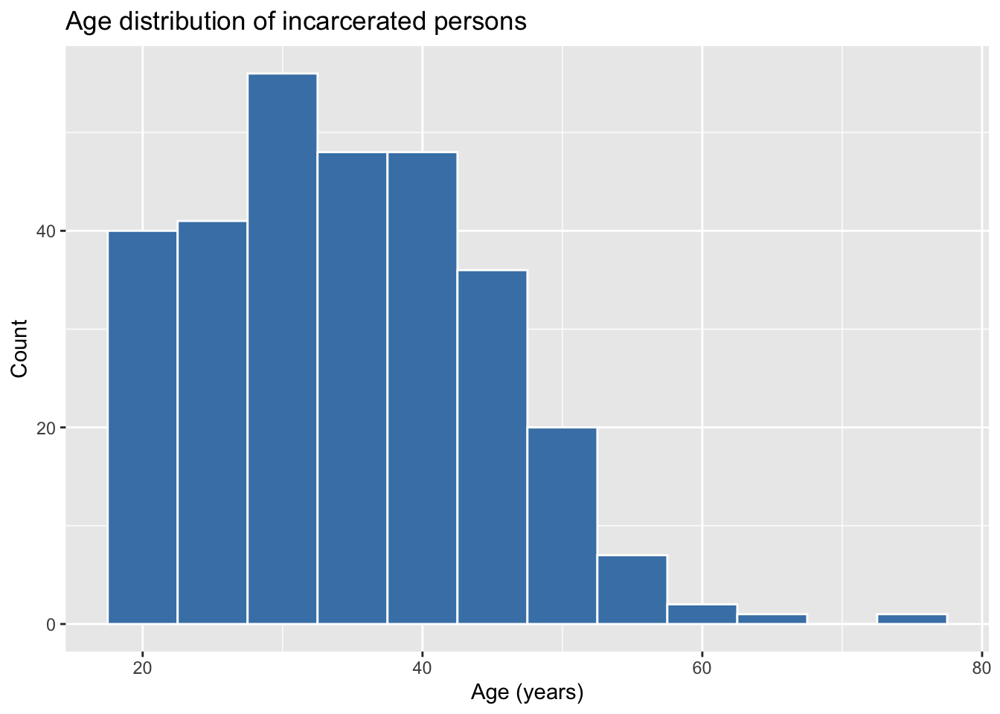
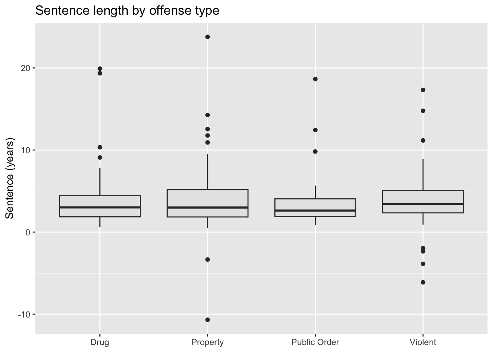

Lab 2 · First Plots with ggplot2
CRJU 705 · Session 2
Goal: make your first plots in R and connect them to today’s descriptive statistics. This lab assumes you’ve read R4DS Ch. 1 (Data visualization) and Ch. 2 (Workflow: basics).
How labs work: run the Setup chunk as-is, follow the Walkthrough along with me, then complete the Your Turn tasks in your own script. The Exit Ticket gets submitted to Canvas before you leave.
Setup
Open RStudio, start a new R script, and run:
prisoners holds records for 300 incarcerated persons (simulated, but realistic): demographics, offense type, sentence, and well-being measures. Look at it first — always look at your data first:
glimpse(prisoners)Rows: 300
Columns: 14
$ prisoner_id <chr> "P0001", "P0002", "P0003", "P0004", "P0005", "P0006…
$ facility <chr> "Central Unit", "River Unit", "River Unit", "Centra…
$ housing_unit <chr> "HU-1", "HU-3", "HU-4", "HU-2", "HU-5", "HU-3", "HU…
$ age <dbl> 36, 51, 33, 38, 36, 35, 26, 30, 18, 23, 18, 18, 40,…
$ gender <chr> "MALE", "Male", "Female", "Male", "Male", "Male", "…
$ race <chr> "Black", "Black", "White", "White", "Black", "Black…
$ education <chr> "Some College", "Less than HS", "HS/GED", "HS/GED",…
$ offense_type <chr> "Property", "Drug", "Property", "Drug", "Property",…
$ sentence_years <dbl> 1.88, 4.34, 6.57, 1.58, 3.10, 19.91, 1.27, 3.05, 5.…
$ months_served <dbl> 23, 52, 79, 19, 37, 156, 15, 37, 68, 20, 49, 34, 8,…
$ stress <dbl> 5.4, 8.4, 4.4, 9.7, 2.8, 8.1, 5.0, 6.3, 4.7, 6.4, 8…
$ depression <dbl> 8.0, 3.8, 9.0, 1.7, 5.0, 5.1, 2.6, 5.4, 3.4, 6.7, 3…
$ sleep_quality <dbl> 1.1, 5.1, 4.6, 3.2, 3.7, 7.7, 4.2, 4.5, 3.8, 4.5, 6…
$ substance_use_risk <dbl> 4.1, 2.4, 6.3, 2.9, 1.2, 6.5, 6.6, 5.9, 5.9, 5.2, 6…Walkthrough
A histogram — the shape of a numeric variable
Today’s lecture was about summarizing numeric variables. A histogram is the picture version:
ggplot(prisoners, aes(x = age)) +
geom_histogram(binwidth = 5, fill = "steelblue", color = "white") +
labs(title = "Age distribution of incarcerated persons",
x = "Age (years)", y = "Count")
Anatomy of every ggplot: data (prisoners), aesthetics (aes(x = age) — which variables map to which visual channels), and geometry (geom_histogram() — how to draw them).
How does the picture relate to the numbers?
# A tibble: 1 × 3
mean_age median_age sd_age
<dbl> <dbl> <dbl>
1 34.5 34 10.2|> symbol?
That’s the pipe — it feeds whatever is on its left into the function on its right, so you can read code top-to-bottom as “take the data, then do this, then do that.” R4DS uses it everywhere. In older code (and in the Stanton book) you’ll see %>% instead — for our purposes they’re interchangeable.
A bar chart — counts of a categorical variable
A boxplot — a distribution split by groups
The five-number-summary as a picture, one box per offense type:
ggplot(prisoners, aes(x = offense_type, y = sentence_years)) +
geom_boxplot(fill = "grey90") +
labs(title = "Sentence length by offense type",
x = NULL, y = "Sentence (years)")
The box is the middle 50% (median = the line inside); the dots are outliers — the same “one 30-year sentence” problem from lecture, visible instantly.
Your Turn
Work in your own script. Comment each answer.
1. Make a histogram of sentence_years. Is it symmetric or skewed? Compute the mean and median — do they agree with what the picture shows? (Hint: today’s lecture.)
# your code here2. Make a bar chart of education. Which category is most common (the mode)?
# your code here3. Make a boxplot of age by offense_type. Which offense type has the most spread in age? Check yourself with sd():
# your code here — for the numeric check:
# prisoners |> summarize(sd_age = sd(age), .by = offense_type)4. (Stretch) Add color = "white" inside your histogram’s geom_histogram() and change its binwidth. What changes? What binwidth seems most honest for sentence_years?
Exit Ticket
Submit a short R script to Canvas before you leave, containing:
- One plot of your choice from today (code only is fine)
- A comment (2–3 sentences): what does the plot show, and which descriptive statistic (mean/median/SD) best summarizes it?
- A comment naming one thing from R4DS Ch. 1–2 or today’s lab that is still confusing